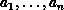
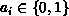
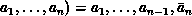
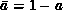
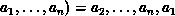
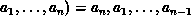
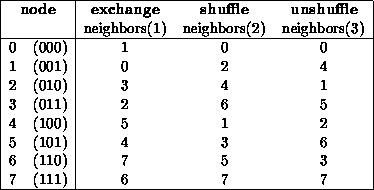

If a topology has been defined with one of the above functions, then the topology information can be looked up using inquiry functions. They all are local calls.
MPI_TOPO_TEST(comm, status)
[ IN comm] communicator (handle)
[ OUT status] topology type of communicator comm (choice)
int MPI_Topo_test(MPI_Comm comm, int *status)
MPI_TOPO_TEST(COMM, STATUS, IERROR)
INTEGER COMM, STATUS, IERROR
The function MPI_TOPO_TEST returns the type of topology that is assigned to a communicator.
The output value status is one of the following:
[ MPI_GRAPH] graph topology
[ MPI_CART] cartesian topology
[ MPI_UNDEFINED] no topology
MPI_GRAPHDIMS_GET(comm, nnodes, nedges)
[ IN comm] communicator for group with graph structure (handle)
[ OUT nnodes] number of nodes in graph (integer) (same as number of processes in the group)
[ OUT nedges] number of edges in graph (integer)
int MPI_Graphdims_get(MPI_Comm comm, int *nnodes, int *nedges)
MPI_GRAPHDIMS_GET(COMM, NNODES, NEDGES, IERROR)
INTEGER COMM, NNODES, NEDGES, IERROR
Functions MPI_GRAPHDIMS_GET and MPI_GRAPH_GET retrieve the graph-topology information that was associated with a communicator by MPI_GRAPH_CREATE.
The information provided by MPI_GRAPHDIMS_GET can be used to dimension the vectors index and edges correctly for the following call to MPI_GRAPH_GET.
MPI_GRAPH_GET(comm, maxindex, maxedges, index, edges)
[ IN comm] communicator with graph structure (handle)
[ IN maxindex] length of vector index in the calling program
(integer)
[ IN maxedges] length of vector edges in the calling program
(integer)
[ OUT index] array of integers containing the graph structure (for details see the definition of MPI_GRAPH_CREATE)
[ OUT edges] array of integers containing the graph structure
int MPI_Graph_get(MPI_Comm comm, int maxindex, int maxedges, int *index, int *edges)
MPI_GRAPH_GET(COMM, MAXINDEX, MAXEDGES, INDEX, EDGES, IERROR)
INTEGER COMM, MAXINDEX, MAXEDGES, INDEX(*), EDGES(*), IERROR
MPI_CARTDIM_GET(comm, ndims)
[ IN comm] communicator with cartesian structure (handle)
[ OUT ndims] number of dimensions of the cartesian structure (integer)
int MPI_Cartdim_get(MPI_Comm comm, int *ndims)
MPI_CARTDIM_GET(COMM, NDIMS, IERROR)
INTEGER COMM, NDIMS, IERROR
The functions MPI_CARTDIM_GET and MPI_CART_GET return the cartesian topology information that was associated with a communicator by MPI_CART_CREATE.
MPI_CART_GET(comm, maxdims, dims, periods, coords)
[ IN comm] communicator with cartesian structure (handle)
[ IN maxdims] length of vectors dims, periods, and coords in the calling program (integer)
[ OUT dims] number of processes for each cartesian dimension (array of integer)
[ OUT periods] periodicity ( true/ false) for each cartesian dimension (array of logical)
[ OUT coords] coordinates of calling process in cartesian structure (array of integer)
int MPI_Cart_get(MPI_Comm comm, int maxdims, int *dims, int *periods, int *coords)
MPI_CART_GET(COMM, MAXDIMS, DIMS, PERIODS, COORDS, IERROR)
INTEGER COMM, MAXDIMS, DIMS(*), COORDS(*), IERROR
LOGICAL PERIODS(*)
MPI_CART_RANK(comm, coords, rank)
[ IN comm] communicator with cartesian structure (handle)
[ IN coords] integer array (of size ndims) specifying the cartesian coordinates of a process
[ OUT rank] rank of specified process (integer)
int MPI_Cart_rank(MPI_Comm comm, int *coords, int *rank)
MPI_CART_RANK(COMM, COORDS, RANK, IERROR)
INTEGER COMM, COORDS(*), RANK, IERROR
For a process group with cartesian structure, the function MPI_CART_RANK translates the logical process coordinates to process ranks as they are used by the point-to-point routines.
For dimension i with periods(i) = true, if the coordinate,
coords(i), is out of range, that is, coords(i) < 0 or
coords(i)
dims(i), it is shifted back to the interval
0
coords(i) < dims(i) automatically. Out-of-range
coordinates are erroneous for non-periodic dimensions.
MPI_CART_COORDS(comm, rank, maxdims, coords)
[ IN comm] communicator with cartesian structure (handle)
[ IN rank] rank of a process within group of comm (integer)
[ IN maxdims] length of vector coord in the calling program (integer)
[ OUT coords] integer array (of size ndims) containing the cartesian coordinates of specified process (integer)
int MPI_Cart_coords(MPI_Comm comm, int rank, int maxdims, int *coords)
MPI_CART_COORDS(COMM, RANK, MAXDIMS, COORDS, IERROR)
INTEGER COMM, RANK, MAXDIMS, COORDS(*), IERROR
The inverse mapping, rank-to-coordinates translation is provided by
MPI_CART_COORDS.
MPI_GRAPH_NEIGHBORS_COUNT(comm, rank, nneighbors)
[ IN comm] communicator with graph topology (handle)
[ IN rank] rank of process in group of comm (integer)
[ OUT nneighbors] number of neighbors of specified process (integer)
int MPI_Graph_neighbors_count(MPI_Comm comm, int rank, int *nneighbors)
MPI_GRAPH_NEIGHBORS_COUNT(COMM, RANK, NNEIGHBORS, IERROR)
INTEGER COMM, RANK, NNEIGHBORS, IERROR
MPI_GRAPH_NEIGHBORS_COUNT and MPI_GRAPH_NEIGHBORS provide adjacency information for a general, graph topology.
MPI_GRAPH_NEIGHBORS(comm, rank, maxneighbors, neighbors)
[ IN comm] communicator with graph topology (handle)
[ IN rank] rank of process in group of comm (integer)
[ IN maxneighbors] size of array neighbors (integer)
[ OUT neighbors] ranks of processes that are neighbors to specified process (array of integer)
int MPI_Graph_neighbors(MPI_Comm comm, int rank, int maxneighbors, int *neighbors)
MPI_GRAPH_NEIGHBORS(COMM, RANK, MAXNEIGHBORS, NEIGHBORS, IERROR)
INTEGER COMM, RANK, MAXNEIGHBORS, NEIGHBORS(*), IERROR
Example
Suppose that comm is a communicator with a
shuffle-exchange topology. The group has 2n members.
Each process is labeled by 
with 
, and has three neighbors:
exchange(
(
), shuffle(
, and unshuffle(
.
The graph adjacency list is illustrated below for n=3.

Suppose that the communicator comm has this topology associated with it. The following code fragment cycles through the three types of neighbors and performs an appropriate permutation for each.
C assume: each process has stored a real number A.
C extract neighborhood information
CALL MPI_COMM_RANK(comm, myrank, ierr)
CALL MPI_GRAPH_NEIGHBORS(comm, myrank, 3, neighbors, ierr)
C perform exchange permutation
CALL MPI_SENDRECV_REPLACE(A, 1, MPI_REAL, neighbors(1), 0,
+ neighbors(1), 0, comm, status, ierr)
C perform shuffle permutation
CALL MPI_SENDRECV_REPLACE(A, 1, MPI_REAL, neighbors(2), 0,
+ neighbors(3), 0, comm, status, ierr)
C perform unshuffle permutation
CALL MPI_SENDRECV_REPLACE(A, 1, MPI_REAL, neighbors(3), 0,
+ neighbors(2), 0, comm, status, ierr)